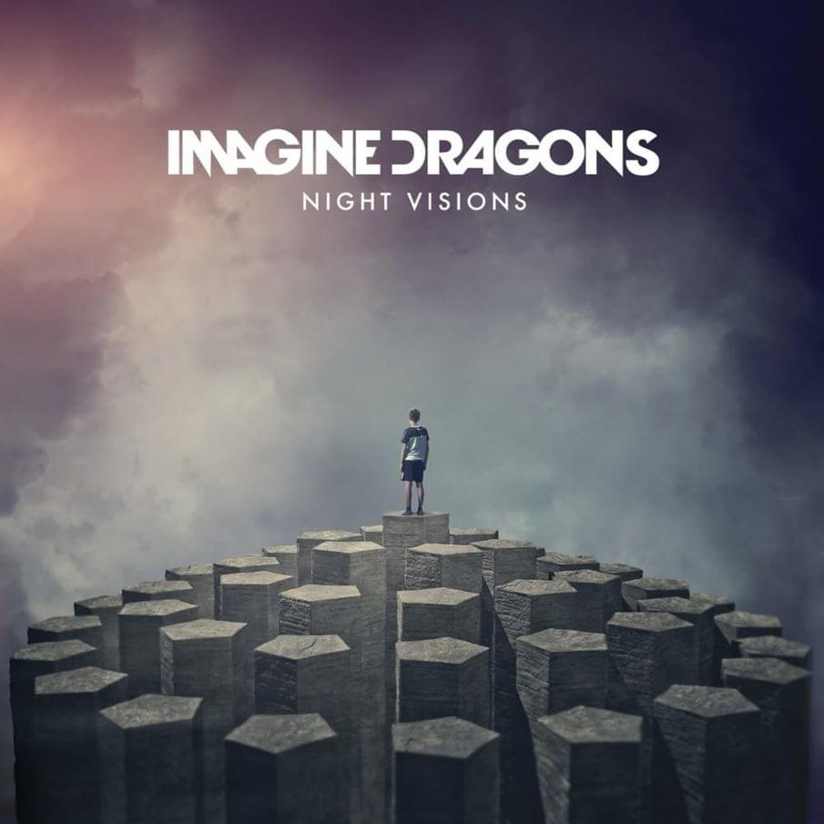

Imagine Dragons es una banda estadounidense de pop rock originaria de Las Vegas, Nevada.
Está compuesta por Dan Reynolds (vocalista), Wayne Sermon (guitarrista), Ben McKee (bajista) y Daniel Platzman (baterista).
Ganó el reconocimiento mundial con el lanzamiento de su álbum de estudio debut Night Visions (2012), y con su canción "It's Time".
Entre su discografía se encontraría:


| Bones |  |
Believer |  |
Demons |  |
| Tampa, Florida, EEUU | Las Vegas, Nevada, EEUU | Vancouver, BC, Canadá |
| 11 Noviembre | 3 Noviembre | 30 enero 2024 Cancelado |
 |
 |